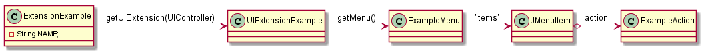
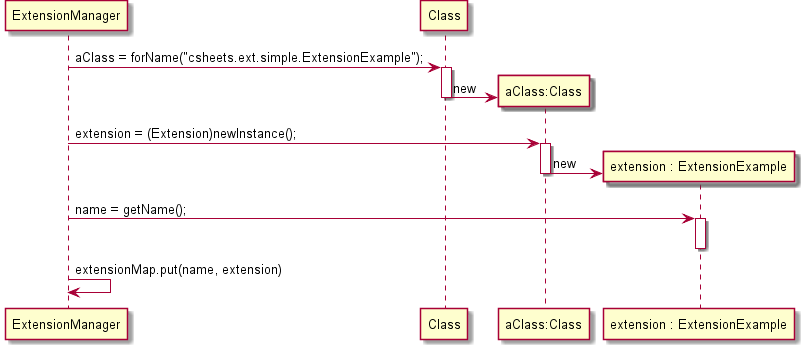
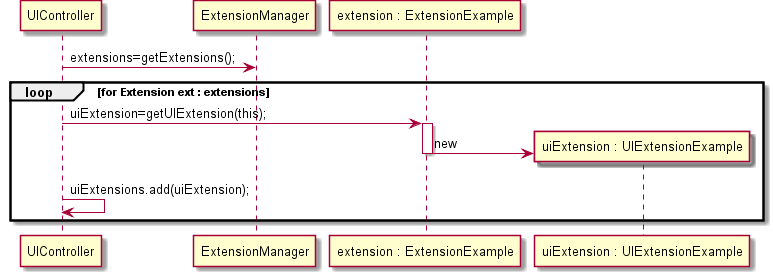
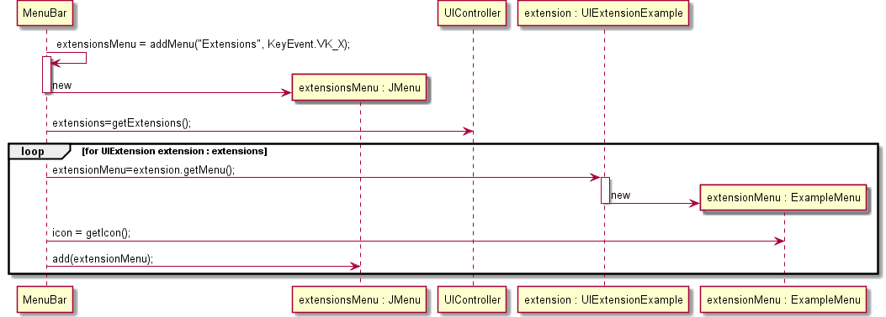
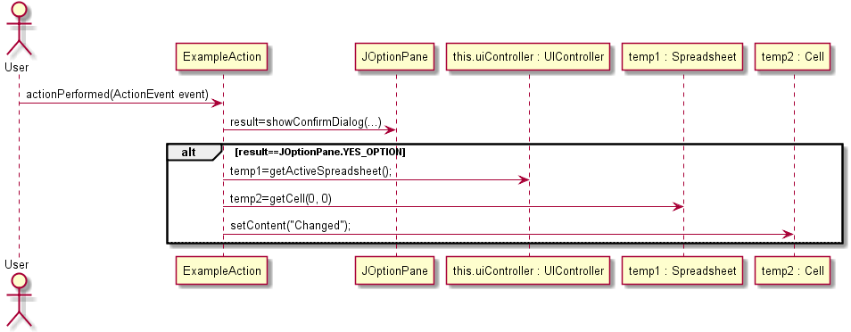

| Class | Description |
|---|---|
| ExtensionExample |
A simple extension just to show how the extension mechanism works.
|
Class Diagram

Sequence Diagrams illustrating the setup of the extension
The following sequence diagram illustrates the creation of the simple extension.
All the extensions are loaded dynamically by the ExtensionManager at application startup.

The following sequence diagram illustrates the creation of the user interface extension.
All the UI extensions are loaded by the UIController at application startup.

The following sequence diagram illustrates the creation of the menu extension.
All the menu extensions are loaded by the MenuBar at application startup.

Sequence Diagrams illustrating use cases of the extension
The following sequence diagram illustrates the use case "Set the contents of the A1 cell".
To be noticed that the operation actionPerformed does not originate directly from the User. There are several other classes involved that are not depicted for clarity purposes.
